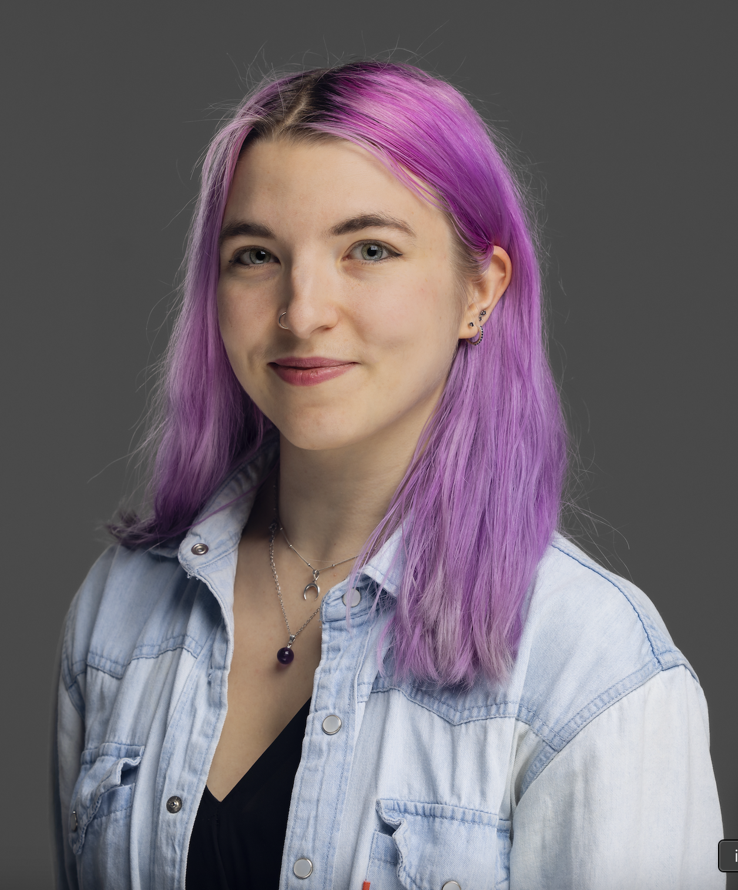

Technical Staff at UK AI Security Institute

Hi, I'm Alex! I'm a researcher on the Alignment Red Team at UK AISI, where I work on safety and security of frontier LLMs. Previously I worked on creating evaluations and red teaming misuse safeguards (see Anthropic and OpenAI blogposts for our testing collabs). Currently, I'm focused on building misalignment evaluations for pre-deployment testing. See our alignment testing reports for , misaligned prefill continuation and unsanctioned supply chain attacks for some work in this area.
Previously, I studied Maths at Cambridge and Machine Learning at UCL as part of UCL Dark lab, interned at CHAI, and in another life worked as a SWE at Microsoft. I am also an OSCP+ certified pentester.
Feel free to reach out!
Poisoning Attacks on LLMs Require a Near-Constant Number of Poison Samples
Alexandra Souly*, Javier Rando*, Ed Chapman*, Xander Davies*, Burak Hasircioglu, Ezzeldin Shereen, Carlos Mougan, Vasilios Mavroudis, Erik Jones, Chris Hicks, Nicholas Carlini, Yarin Gal, Robert Kirk
NeurIPS 2026 Spotlight, Anthropic blogpost
Fundamental Limitations in Defending LLM Finetuning APIs
Xander Davies, Eric Winsor, Alexandra Souly, Tomek Korbak, Robert Kirk, Christian Schroeder de Witt, Yarin Gal
NeurIPS 2025
AgentHarm: A Benchmark for Measuring Harmfulness of LLM Agents
Maksym Andriushchenko*, Alexandra Souly*, Mateusz Dziemian, Derek Duenas, Maxwell Lin, Justin Wang, Dan Hendrycks, Andy Zou, J Zico Kolter, Matt Fredrikson, Yarin Gal, Xander Davies
ICLR 2024
A strongreject for empty jailbreaks
Alexandra Souly*, Qingyuan Lu*, Dillon Bowen*, Tu Trinh, Elvis Hsieh, Sana Pandey, Pieter Abbeel, Justin Svegliato, Scott Emmons, Olivia Watkins, Sam Toyer
NeurIPS 2024
*Core contributors